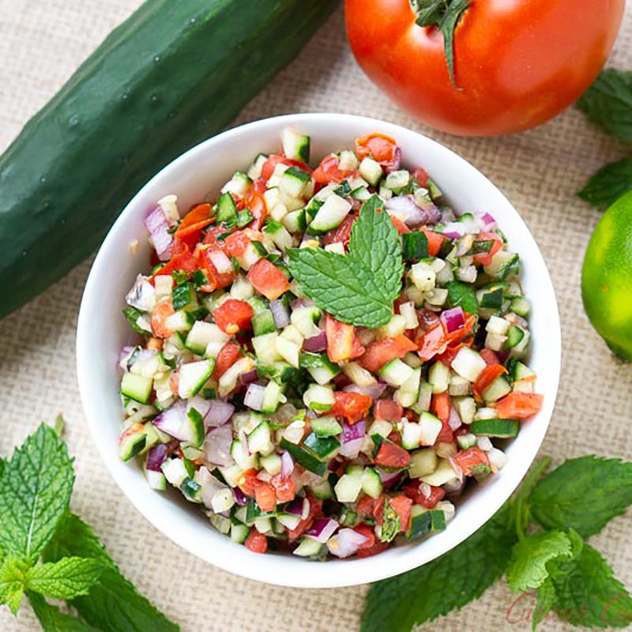

Iranian / Persian Salad Shirazi

An excellent light side salad to accompany a heavy
Persian meal or any meal really. Sumac is the red
bitter spice usually served for sprinkling on kebab.
It's available at most Middle Eastern stores,
but if you can't find it just leave it out.
I like to dice the veggies very small about 1/4-inch.
Serve with fresh lemon wedges.
Ingredients
- 4 ripe tomatoes, seeded and diced
- 1 red onion, diced
- 2 small English cucumbers, peeled and diced
- 3 tablespoons olive oil
- lemon, juiced
- 1 tablespoon dried mint
- 1 teaspoon dried dill
- 1 teaspoon ground sumac
- salt and ground black pepper to taste
Directions
-
Mix tomatoes, red onion, cucumbers, olive oil,
lemon juice, mint, dill, sumac, salt,
and pepper together in a bowl.